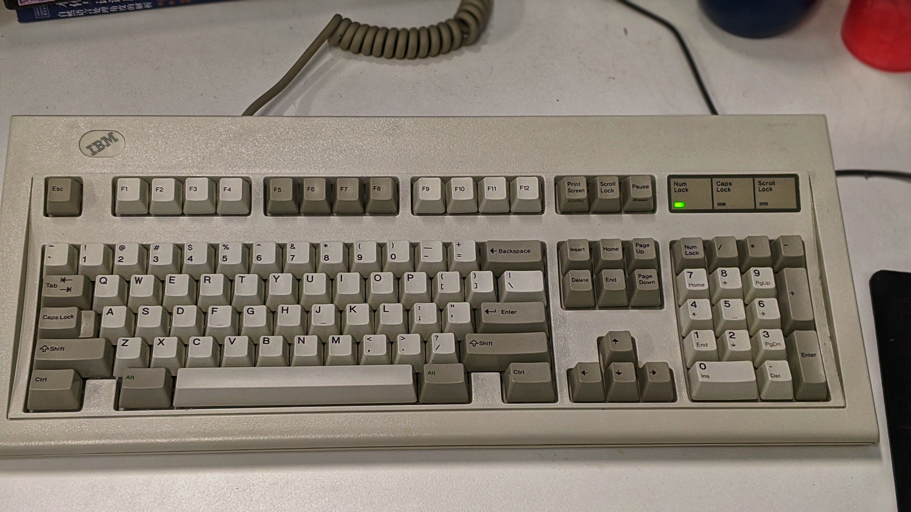
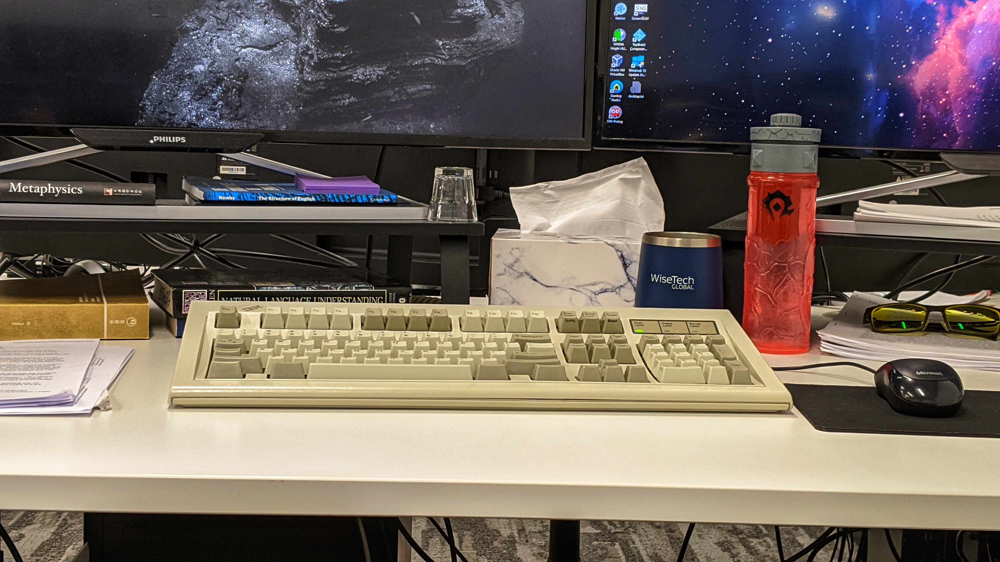
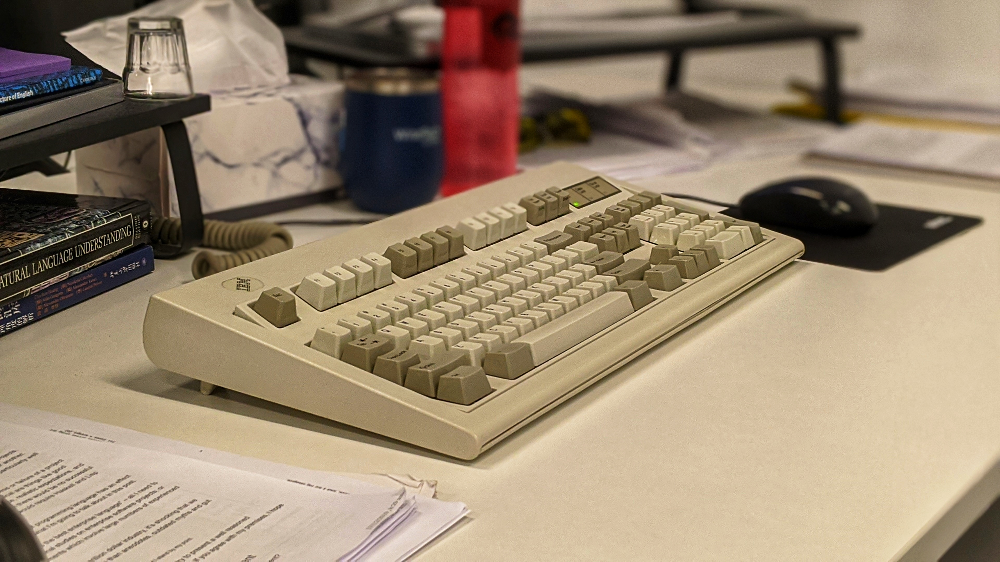
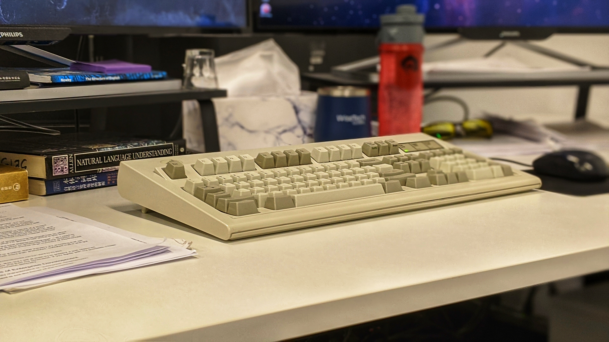

IBM Model M 来了
心仪许久的 IBM Model M 终于送达了，放在公司桌面上视觉效果出众。
Model M designates a group of computer keyboards designed and manufactured by IBM starting in 1984, and later by Lexmark International, Maxi Switch, and Unicomp. The keyboard's many variations have their own distinct characteristics, with the vast majority having a buckling-spring key design and swappable keycaps. Model M keyboards have been praised by computer enthusiasts and frequent typists due to their durability and consistency, and the tactile and auditory feedback they provide.




键盘的成色挺不错，敲击感非常好，敲打声很大。我用了一小会儿后，周围的同事都"不约而同"地戴起了降噪耳机。